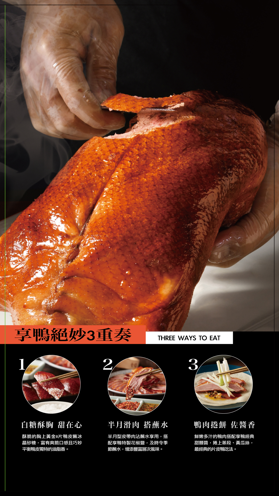
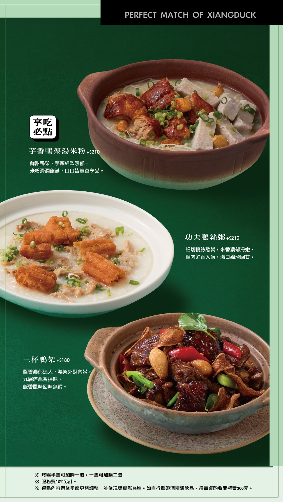
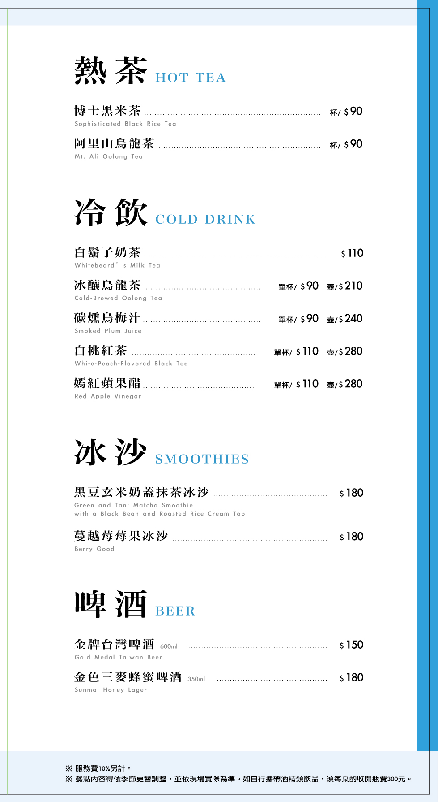

|
 享鴨主角 | 琥珀酥皮烤鴨 琥珀酥皮烤鴨一隻$1,980 附荷葉餅12片、 蔥段、大黃瓜絲、 特製甜麵醬、享輪花椒鹽、季節蘸水 琥珀酥皮烤鴨半隻$1,080 附荷葉餅6片、 蔥段、大黃瓜絲、 特製甜麵醬、享鴨花椒鹽、季節蘸水 |
|
 鴨架好味 |
PERFECT MATCH OF XIANGDUCK 鴨架好味 享吃必點 芋香鴨架湯米粉+5270 鮮甜鴨架,芋頭線軟濃郁。 米粉酒潤飽滿,口口皆豐富享受。 功夫鴨絲粥+5210 細切鴨絲熬粥,米香濃郁滑嫩。 鴨肉鮮香入曲,滿口綿滑回甘。 三杯鴨架 #5180 醬香濃郁迷人,鴨架外酥內嫩九層塔觀香提味。 鹹香風味回味無窮。 翠玉鴨架湯+5210 鴨架細火熬煮,搭配蔬菜清甜。 湯頭鮮醇濃郁,入口暖胃又回甘。 享吃必點 蒜酥鴨架+5180 蒜香四溢,外酥內嫩。 椒鹽微辣提味,香脆鹹香完美平衡。 琥珀生菜鴨鬆 +$180 鴨肉切碎快炒,加入筍丁、 香菇和油條,讓口感有軟嫩。 【脆爽、酥香的隔次。 |
|
 享鴨推薦 |
享鴨推薦 OUR RECOMMENDATION 香 四喜烤麩 $160 冰糖醬香鴨翅 $210 蔥餅捲鴨肉 $220 (爆) 酸菜芝麻流沙湯圓 $110 $220 勁 (鮮) 甘 ★瑤柱醬爆蘿蔔糕$270 翡翠魚卵炊蛋 $290 *甘樹子水運 $250 (燒) 滑 黃燜野蔬嫩雞煲 $310 金沙海鮮豆腐煲 $310 金銀蒜蒸魚 $380 金沙奶蓋布丁 $110 ENJOY THE MOMENT |